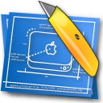

Step 6: Finishing Up
At this point, our simple plugin is almost complete. However, there's one more cosmetic change we can make; our list does not yet have a title. To implement this, open ApplianceController.m, go to the -initWithScene: method, and add the following code before the setDatasource: line:
[self setListTitle: @"BDK Tutorial"];
Now, when you build and run your appliance, you will see the following screen:
The list now shows a title in its header cell.
That's all for this tutorial. I hope that this toolkit proves useful, and that it inspires you to create many wonderful additions to the Apple TV's arsenal.
For more information, please visit these useful sites: